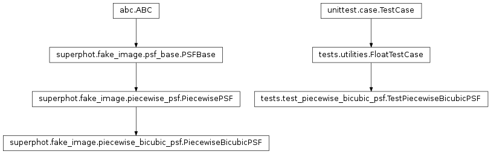
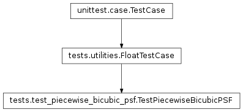

tests.test_piecewise_bicubic_psf module¶
Class Inheritance Diagram¶

Define unittest test case for the PiecewiseBicubicPSF class.
-
class
tests.test_piecewise_bicubic_psf.TestPiecewiseBicubicPSF(methodName='runTest')[source]¶ Bases:
tests.utilities.FloatTestCaseMake sure the PiecewiseBicubicPSF class functions as expected.